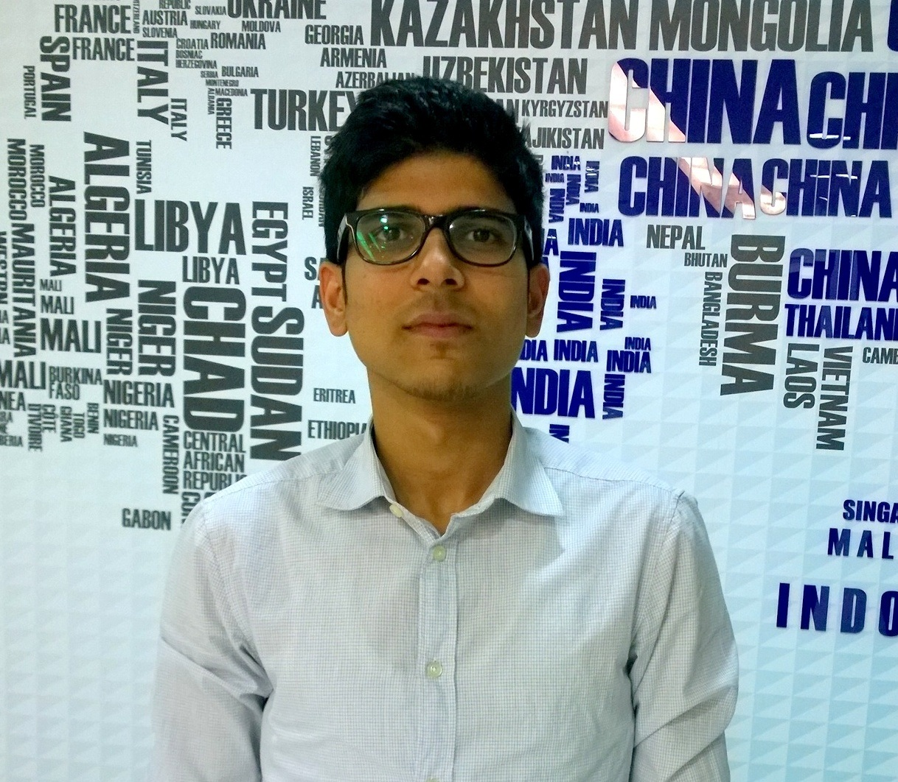
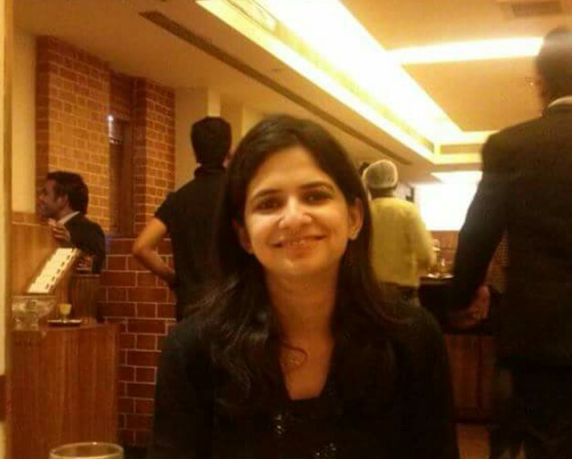

Candidate Testimonials
Sumit Singare

10 Months experience. Principal Global Services gave me platform for all round development. People development is one of the five core values of Principal. At PGS I get opportunities to learn and work on new technologies. PGS ranked 18th in Best place to work in IT. We work hard here and we party harder.
College Of Engineering Pune
Pune
Aritra Banerjee

Principal Global Services being the first company of my career I had no idea what to expect out of it. In general I had not heard much good about doing a job in the IT sector, from the working professionals I knew. As a result I was a bit apprehensive before joining. Moreover I was a Mechanical Engineer in an IT industry... As of today I have no qualms in accepting how wrong my thinking was! Its been over a year and this turned out to be one of the best decisions that I ever took. Be it the training or the culture or the work life balance or the caring people, or maybe it was all of it together that forced me to change my outlook. The most overwhelming feeling that I have now is Pride. Pride to be associated with the Principal!
Sir M. Visvesvaraya Institute of Technology
Bangalore
Nikhil Kabra

The best place to start your career at, is "The Principal". Being a fresher, I didn't have to wait, even for a week to start developing and delivering independently after joining floor/business.
MIT College Of Engineering
Pune
Niharika Ponnapalli

PGS is one of the best companies to kick-start your career. The working environment is great. There's a lot of scope for freshers right out of college, with a lot to learn and a lot of new technologies to dabble in. There is no dividing line between the seniors and the new joiners, everyone is immensely friendly and easy to approach. At the same time, there is no spoon-feeding. To add to this, there is also a immense encouragement given to extra-curricular activites, may they be outdoor sports or indoor activites. All in all, I think I've gotten lucky with PGS.
Cummins College Of Engineering for Women, Pune
Hyderabad
Tanu Dube

I joined PGS on 17th of July 2014.Its been almost a year well spent now.It had been a great learning experience for me starting from the training to working on the floor and contributing to business. All the leaders and employees of PGS made it easy for me to have a smooth transition from campus to corporate.Apart from being groomed as a professional I have also improved as as an individual over here.The flat organization culture helped a lot in this.Talking on professional skill set part I have learnt the things expected by a QA in industry.I have also been given opportunity to work on challenging projects including both automation and manual testing.
Ideal Institute of Technology,Uttar Pradesh Technical University
Ghaziabad